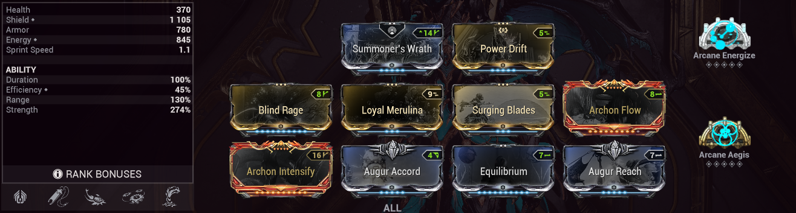

This the most basic Yareli build i have and the one i use the most. This build is a very good all rounder providing VERY good survivability, decent damage and a somewhat decent range for the forth ability.
There is nothing crazy really just some basic mods like:
- Arcane Energize - Archon Flow - Equilibrium for Energy sustain
- Summoner's Wrath - Power Drift - Blinding Rage - Archon intensify - Surging Blades for Strenght for Strenght and damage
- Loyal Merulina - Augur Accord - Arcane Aegis for survivability
- Finally Augur reach as a flexible slot for whatever you need or prefer (in this case: Range)
We also have Koumei's subsume for an added layer of survivability on top of what we already have for a
chance to ignore incoming damage and getting a heal instead, activating archon intensify.
Loyal Merulina as you probably already know makes so we summon Merulina as a minion instead of as a mount making movement
a lot easier while allowing us to subsume our frist ability (because Merulina shoots bubbles that work
exactly like our 1) while at the same time allowing us to run "Summoner's Wrath" to buff Merulina's damage. Then we have
Aegis that help us keep our shields up, and, that's pretty much it, a very simple and easy build that we can use for pretty much any mission type.